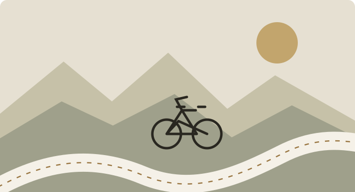
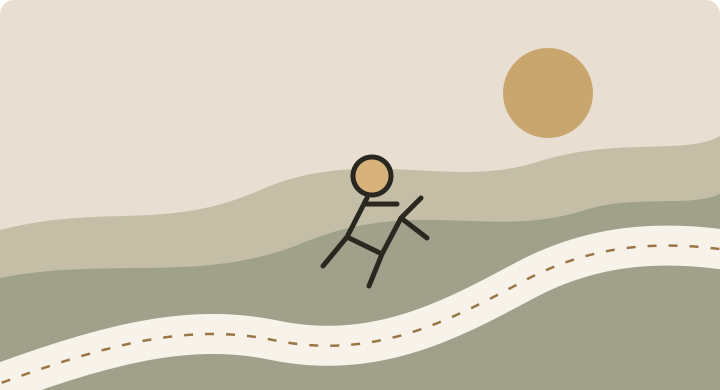

Read · Note
Why I’m building EARONNEL.
A little context for this website and the things I want to collect here over time.
Read the note ↗A PERSONAL CORNER OF THE INTERNET
Prince Earonnel Del Mundo Arroyo
Accountancy student. Curious learner. Cyclist. Runner.
I’m figuring things out across study, business, and life outside the classroom. This is where I’ll collect what I learn, the projects I work on, and the rides and runs that make up the journey.

01 — WHAT I’M INTO
Not just a résumé. A living collection of the subjects, experiences, and small discoveries I want to share.
Ideas from school, useful study notes, and lessons I’m working through.
Explore learning↗Ride journals, route notes, photos, and the occasional gear reflection.
Explore cycling↗
Training reflections, personal milestones, and notes from the road.
Explore running↗Research, collaborations, and useful things I’ve worked on.
See projects↗02 — THE PERSON BEHIND THE SITE
I’m an accountancy student at the University of Santo Tomas’ AMV College of Accountancy in the Philippines.
I’m interested in how accounting and business help people make decisions, and I enjoy learning through projects, questions, and trying things for myself. Outside academics, cycling and running give me another way to explore, reset, and keep moving.
This site is a home for that mix: what I’m learning, what I’m making, and what I’m experiencing along the way.
Read the full biography ↗Build knowledge one idea at a time.
Turn ideas into real projects.
Find time for rides and runs.
03 — JOURNAL & MEDIA
The journal is designed for writing, photos, and video as the collection grows. For now, start with the note about why this website exists.
A little context for this website and the things I want to collect here over time.
Read the note ↗A home for future ride photos, route notes, and little moments worth remembering.
Explore the cycling page ↗A future home for running clips, training reflections, and progress worth documenting.
Explore the running page ↗04 — STAY CONNECTED
I’ll add public profiles and project links here as they’re ready to share.
05 — PUBLIC LINKS
These spaces will connect the website to my wider work when the correct public URLs are added.
My professional profile will be linked here once its public URL is added.
Link to be addedApproved research summaries, presentations, and project write-ups can live in the project portfolio.
Browse projects ↗Privacy first: only add public contact details and academic materials that you have permission to share. Your home address, personal IDs, and private class files do not belong here.